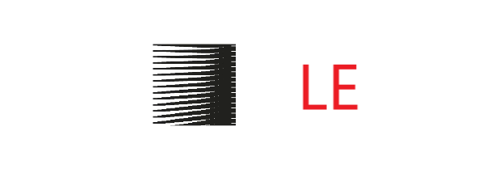

CLE Learner's Kit
CLE is a syntactical and procedural helping environment that allows for our API's to
communicate and suggest valuable changes to the programs that it hosts over. While it
was intentionally launched for beginners, developers too can refer it's documentation
fetching models.
An authentication will be required in the setup wizard.
All Cascade API downloads are cross-platform. If you haven't registered, you can always do that for free over here.